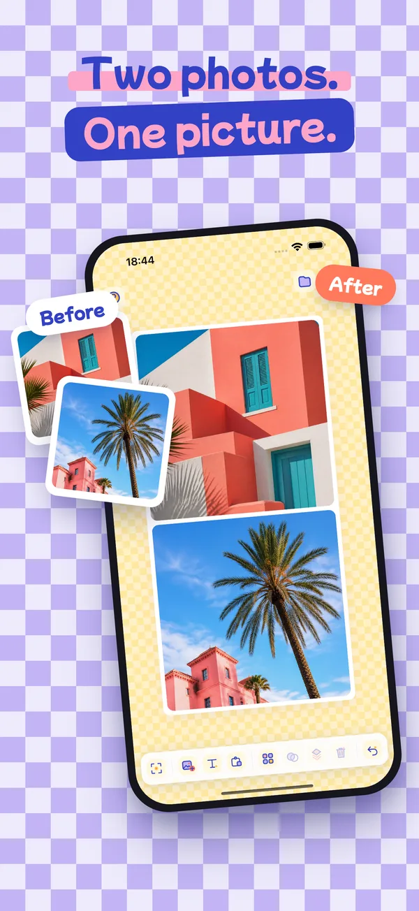
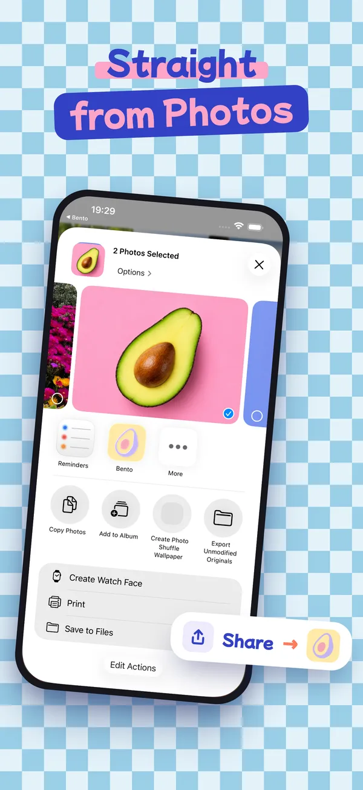
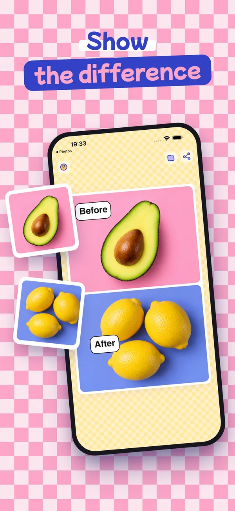
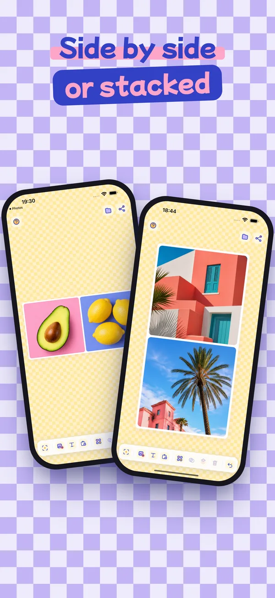
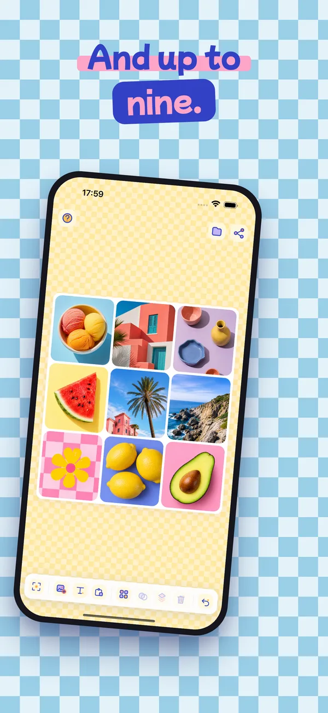

Bento Board
Collage photo, grille ou libre.
Sélectionnez quelques photos dans votre photothèque, touchez Partager, choisissez Bento : la planche s'ouvre avec vos images déjà en place. Rangez-les dans une grille nette, ou posez-les où vous voulez.
Télécharger dansl'App Store- Gratuit
- Sans compte
- Sans publicité
- iPhone et iPad





Directement depuis Photos
Sélectionnez plusieurs photos, touchez Partager, choisissez Bento. Pas d'import une par une : elles arrivent toutes sur la planche.
Grille ou libre
Dix dispositions, du plein cadre au 3×3, en carré, 4:5, 9:16 ou 16:9 — ou pas de grille du tout.
Montrez la différence
Avant et après, côte à côte ou empilés, avec des bulles de bande dessinée pour dire qui est qui.
Tout au doigt
Pincez pour zoomer dans une case, glissez pour recadrer, appui long pour échanger deux photos.
Pleine définition
Exportez vers votre photothèque ou n'importe quelle app. Vos projets s'enregistrent tout seuls.
Rien ne quitte votre téléphone
Aucun compte, aucune publicité, aucun suivi, aucune connexion. Lire la politique de confidentialité.